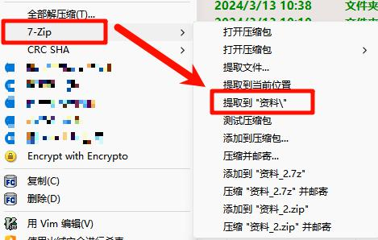

点击右键，鼠标移动到刚才你看到的选项上，右侧会弹出一个子菜单，选择类似于提取到 xxx\其中 xxx 是你选择的文件夹的名字这样的选项，点击即可。随后在你点击的东西的旁边会出现一个文件夹，里面就是你需要的文件。
如果你的压缩包叫资料，那么你会看到类似提取到 资料\这样的选项。
如果你的压缩包叫表格，那么你会看到类似提取到 表格\这样的选项。
如果你的压缩包叫收看带上，那么你会看到类似提取到 收看带上\这样的选项。
如果你的压缩包叫file-a，那么你会看到类似提取到 file-a\这样的选项。
如果你的压缩包叫download file，那么你会看到类似提取到 download file\这样的选项。